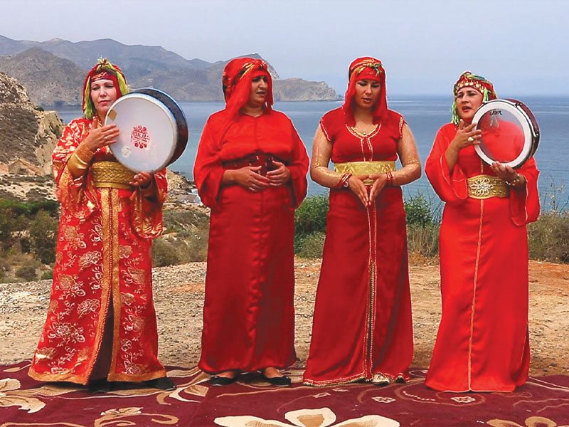

المسرح

الفرجة المسرحية الشعبية ارتبطت بروافد ثقافية عربية وأمازيغية وأندلسية وإفريقية وكان قاسمها المشترك هو طابعها الشفهي وإدماجها للجمهور المتلقي في الفرجة المسرحية. من أهم هذه التعبيرات
الحلقة: هي الشكل الأكثر انتشارا في مختلف مناطق المغرب، خصوصا في الساحات الكبرى للمدن والأسواق
البساط: مقارنة بالحلقة كان شكلا أكثر نخبوية، يكون في مجالس السلاطين ورجال الدولة والأعيان (القياد)، ويكون فيه هامش الحرية أكبر وتغلب عليه الفكاهة

إمذيازن : شكل مسرحي أمازيغي , هو عبارة عن مسرح متنقل بين القرى والأسواق الأسبوعية، يعتمد على الاستعراض والألعاب البهلوانية والشعر الأمازيغي، الفرق كانت تعتمد على آلات موسيقية كالدفوف والبنادير المغربية والناي القصبي..
